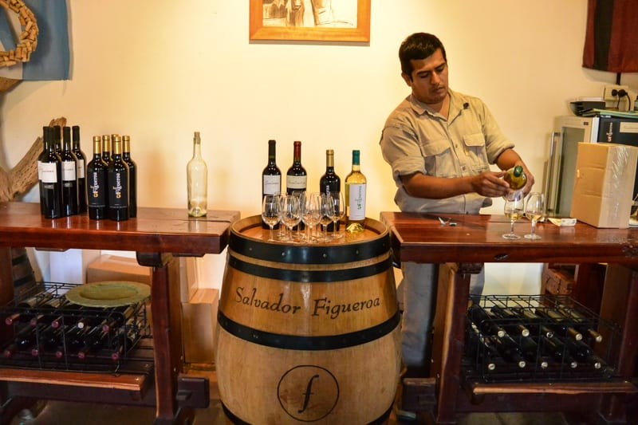

This is Argentina's only 100% native grape variety.
Experience Torrontés Tasting

Exploring the high-altitude vineyards of the north, famous for this unique, floral white wine.
In Cafayate, the Torrontés grape is a 'genetic freak' of nature—it’s the only grape variety that evolved inside Argentina!
It’s a "Cross-breed." DNA testing in the early 2000s proved it’s a natural hybrid of Muscat of Alexandria and Criolla Chica.
The "Sensory Surprise"
The most unique part of tasting Torrontés is the aroma-to-palate contrast.
When you smell it, you’ll be hit with intense "sweet" notes—jasmine, orange blossom, and rose petals.
When you take a sip, the wine is surprisingly bone-dry and zesty. Experiencing this "trick" on your senses is the hallmark of a true Cafayate Torrontés.
Traditional Pairings
Don't just drink the wine; eat the local snacks that are specifically designed to balance the floral notes of Torrontés:
Spicy Salta Empanadas: The acidity of the wine cuts through the richness of the meat and the spice of the pimentón.
Goat Cheese: Cafayate is famous for its goat farms (like Cabras de Cafayate). The creamy, tangy cheese is the perfect partner for the crisp white wine.
Wine Ice Cream: Visit Heladería Miranda in the town square to try Torrontés-flavored ice cream. It’s a legendary local treat that captures the essence of the grape in dessert form.
What to Expect
High-altitude vineyards (some of the highest in the world) and a white wine that smells like flowers but tastes dry and crisp.